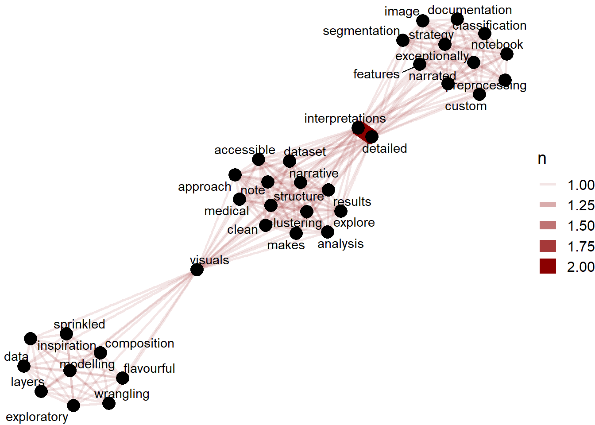

Chapter 2 Most Popular Hidden Gems Authors
Jonathan Bouchet has the highest number of gems ( 9)
gems %>%
group_by(author_name) %>%
summarise(Count = n()) %>%
filter(Count >=3) %>%
arrange(desc(Count)) %>%
ungroup() %>%
mutate(author_name = reorder(author_name,Count)) %>%
ggplot(aes(x = author_name,y = Count)) +
geom_bar(stat='identity',colour="white", fill = fillColor2) +
geom_text(aes(x = author_name, y = 1, label = paste0("(",Count,")",sep="")),
hjust=0, vjust=.5, size = 6, colour = 'black',
fontface = 'bold') +
labs(x = 'author',
y = 'Count',
title = 'author and Count') +
coord_flip() +
theme_fivethirtyeight(base_size = 15)2.1 Jonathan Bouchet Notebooks - Top Hidden Gem Author
jb_gems = gems %>%
filter(author_name == "Jonathan Bouchet") %>%
select(title,review)
jb_gems %>%
gt() %>%
tab_header(
title = "Jonathan Bouchet Notebooks")| Jonathan Bouchet Notebooks | |
|---|---|
| title | review |
| U.S. Commercial Flights Tracker Map | Stunning maps are accompanied by lots of other fantastic visuals in this outstanding Notebook by one of my favourite Kagglers. Tons of dataviz inspiration in this criminally underrated work. |
| Airlines Route Tracker | Beautiful maps of airline frequencies and routes from one of Kaggle's most prolific Notebook authors. Great attention to detail and exemplary engagement with comments from the community. |
| Cities Transportation system visualization | Another dataviz master class that explores the public transport networks of major cities. Also see the associated interactive [R shiny app](https://jonathanbouchet.shinyapps.io/transport_visualization/). |
| F1 Data analysis | An insightful exploration of Formula 1 history that showcases the author's trademark style of combining creative and thoughtful visuals with detailed interpretation and context. |
| Pokemon Battles | Another fantastic end-to-end analysis by one of Kaggle's most prolific Notebook authors. Note in particular the radar charts, consistent narrative flow, and how every question in the comments is answered in detail. |
| Beware of trolls | An expertly crafted analysis of troll tweets; featuring a range of diverse visuals, a concise setup, and careful notes and interpretations. Note in particular the heatmap and annotated time series. |
| A closer look at the FIFA Ranking | Another classic Notebook by Jonathan that showcases the tailored exploration of a dataset in great detail with detailed explanations, beautiful graphs, and insightful interpretation. |
| 2017 German Elections : some results | A somewhat topical entry, this notebook produces expert visuals to analyse the previous German voting patterns in 2017. Lots of inspiration to study and compare the recent 2021 election. |
| NBA player of the week ... he's on fire !!! | A detailed exploration of a basketball award category and the characteristics of winning players and teams. Check out the strong narration, the clean data wrangling, and the fantastic visuals. |
For each of the authors we show a word cloud as well as a network graph
A word cloud is a graphical representation of frequently used words in the text. The height of each word in this picture is an indication of frequency of occurrence of the word in the entire text.
We wish to find out the important words in the Hidden Gem reviews. Example for your young child , the most important word is mom. Example for a bar tender , important words would be related to drinks. For the following Hidden Gem Authors, we plot the most important or distinguishing words
2.2 Jonathan Bouchet - Leading Hidden Gem Author reviews
The reviews reveal that these notebooks are detailed and have very detail exploration. You would also be treated with beautiful and insightful visualizations through this
my_stop_words <- bind_rows(stop_words,
tibble(word = c("kaggle", "survey", "https", "2021",
"2020","www.kaggle.com")))
drawNetworkGraph <- function(author, occur=2) {
gem_review <- gems %>%
filter(author_name == author) %>%
select(notebook,review) %>%
unnest_tokens(word, review) %>%
anti_join(my_stop_words)
gem_review %>%
count(word,sort = TRUE) %>%
ungroup() %>%
head(30) %>%
with(wordcloud(word, n, max.words = 30,colors=brewer.pal(8, "Dark2")))
review_word_pairs <- gem_review %>%
pairwise_count(word, notebook, sort = TRUE, upper = FALSE) %>%
filter( item1 != "www.kaggle.com") %>%
filter( item2 != "www.kaggle.com") %>%
filter( item1 != "https")
review_word_pairs
set.seed(1234)
review_word_pairs %>%
filter(n >= occur) %>%
graph_from_data_frame() %>%
ggraph(layout = "fr") +
geom_edge_link(aes(edge_alpha = n, edge_width = n), edge_colour = "darkred") +
geom_node_point(size = 5) +
geom_node_text(aes(label = name), repel = TRUE,
point.padding = unit(0.2, "lines")) +
theme_void(base_size = 15)
}
drawNetworkGraph("Jonathan Bouchet")getImportantWords <- function(author) {
tfidf_trainWords %>%
filter(DisplayName == author) %>%
arrange(desc(tf_idf)) %>%
mutate(word = reorder(word,tf_idf)) %>%
head() %>%
ggplot(aes(x = word,y = tf_idf)) +
geom_bar(stat='identity',colour="white", fill = "orange")+
labs(x = 'word',
y = 'tf-idf',
title = 'Most Important words') +
coord_flip() +
theme_fivethirtyeight(base_size = 15) +
theme(legend.position = "none")
}
getImportantWords("Jonathan Bouchet")2.3 Ramshankar Yadhunath - Leading Hidden Gem Author reviews
The reviews reveal that these notebooks have visual analysis and visual interpretations
2.4 Parul Pandey - Leading Hidden Gem Author reviews
The reviews indicate strong association with covid 19 topics. This is expected since the Hidden Gem Notebooks are about Pollution and the Indian Stock Index Nifty of how they were affected by COVID 19
a = gems %>%
filter(author_name == "Parul Pandey") %>%
select(title,review)
a %>%
gt() %>%
tab_header(
title = "Parul Pandey Hidden Gems")| Parul Pandey Hidden Gems | |
|---|---|
| title | review |
| Breathe India: COVID-19 effect on Pollution | A detailed work studying the interaction between the big topics of COVID-19 and air pollution in past and recent data from India. |
| Nifty data EDA | A well-structured exploration of Indian stockmarket data with annotated time series visuals; including the impact of the first Covid-19 lockdowns on the economy. |
| Recreating Gapminder visualisation with Bokeh | A step by step guide on how to reproduce the dataviz techniques pioneered by the late, great Hans Rosling using the Python Bokeh library. Clean code and much attention to detail. |
2.5 Laura Fink - Leading Hidden Gem Author reviews
Laura Fink reviews have words mentioning detailed visuals and detailed interpretations
a = gems %>%
filter(author_name == "Laura Fink") %>%
select(title,review)
a %>%
gt() %>%
tab_header(
title = "Laura Fink Hidden Gems")| Laura Fink Hidden Gems | |
|---|---|
| title | review |
| How good does your chocolate taste? | A flavourful composition of layers of data wrangling and exploratory visuals; sprinkled with inspiration for modelling. |
| Computer vision with seedlings | An exceptionally well narrated Notebook on image classification, which features a custom segmentation strategy for preprocessing as well as detailed interpretations and documentation. |
| Patterns of colorectal cancer - image clustering | A clustering analysis with great visuals and detailed interpretations that explore a medical dataset. Note how the clean narrative structure makes the approach and results accessible. |

2.6 Vopani - Leading Hidden Gem Author reviews
3 different clusters of reviews. The cluster focused on read table, cudf , pandas . The other cluster focused on hugging face , tensorflow . The third cluster on the 2019 , 2020 survey
a = gems %>%
filter(author_name == "Vopani") %>%
select(title,review)
a %>%
gt() %>%
tab_header(
title = "Vopani Hidden Gems")| Vopani Hidden Gems | |
|---|---|
| title | review |
| A deep learning of Deep Learning | A deep meta-look into the deep learning preferences of our deeply fascinating community. Narrated and illustrated based on data from the [2019 Kaggle Survey](https://www.kaggle.com/c/kaggle-survey-2019). It will be interesting to see how the numbers change in 2020 and beyond. |
| TPU Sherlocked: One-stop for HuggingFace with TF | A clean NLP starter framework for the [Contradiction Competition](https://www.kaggle.com/c/contradictory-my-dear-watson/) with Tensorflow and Huggingface models. Well documented and extendable for fast experimentation (including TPU configuration). |
| Tutorial on reading large datasets | An impressively clean and accessible primer on Python tools to read, and formats to store, large datasets. Brief and to the point; featuring Pandas, Dask, Datable, and Rapids cudf. |
2.7 kxx - Leading Hidden Gem Author reviews
3 clusters are visible. The 1st cluster is about keras and tidymodels . The 2nd cluster is about the tabular sparse data in the santander competition. The 3rd cluster is about image classification of leaf disease. Please note the connection between the 1st cluster and the 2nd cluster is through model
a = gems %>%
filter(author_name == "kxx") %>%
select(title,review)
a %>%
gt() %>%
tab_header(
title = "kxx Hidden Gems")| kxx Hidden Gems | |
|---|---|
| title | review |
| Santander: EDA + features | A great example for an end-to-end framework to model anonymised & sparse tabular data. The next Santander competition is never far away ;-) |
| MOA Recipe | An elegant R tidymodels + Keras approach to building a neural network starter model. Concise and well explained |
| Leaf doctoR: EDA | A well-structured template showcasing the step-by-step usage of the new [torch for R framework](https://torch.mlverse.org/) on the ongoing [Leaf Disease Image classification competition](https://www.kaggle.com/c/cassava-leaf-disease-classification). |
2.8 Bojan Tunguz - Leading Hidden Gem Author reviews
Reviews strongly indicate the words gpu , rapids, xgboost
a = gems %>%
filter(author_name == "Bojan Tunguz") %>%
select(title,review)
a %>%
gt() %>%
tab_header(
title = "Bojan Tunguz Hidden Gems")| Bojan Tunguz Hidden Gems | |
|---|---|
| title | review |
| MNIST 2D t-SNE with Rapids | One of the first Notebooks on Kaggle demonstrating the game-changing speed up provided by Nvidia's GPU-magic tools. An exhibit as concise and powerful as the code itself. |
| Adversarial Rainforest | A compact work providing adversarial validation of the rainforest competition data together with interpretable Shapely values via GPU-powered XGBoost in the Rapids framework. |
| TPS 01-21 Feature Importance with XGBoost and SHAP | A notebook showcasing a fast method for computing explanatory SHAP values through GPU-powered Rapids XGBoost. This provides feature importances and thereby model interpretability. |